Cerca per organizzatore
Laboratori, atelier, associazioni e artigiani che propongono workshop e corsi su The Crafty Club. Tocca un nome per vedere solo le sue attività.
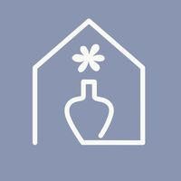
Spazio IAIA
Laboratorio di ceramica e spazio creativo in Via Verzuolo: decorazione, modellazione, colazioni e aperitivi creativi.18 attività in programma Bottega Botanica
Bottega Botanica
Workshop botanici di Valeria Icardi in Via Rocciamelone: kokedama, mazzi di fiori freschi, ghirlande e piccoli giardini sotto vetro, tra tè e biscotti.12 attività in programma Bunker
Bunker
Lo spazio culturale di Via Paganini, in Barriera di Milano, con corsi settimanali di musica, danza, teatro, scrittura e arti visive.12 attività in programma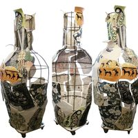
Pottery Lab
Laboratorio di ceramica con corsi di tornio e modellazione, workshop a tema, servizio di cottura e spazi per lavorare in autonomia.12 attività in programma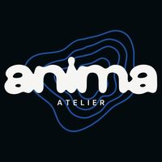
Anima Atelier
Associazione culturale e atelier d’arte in Corso Orbassano: workshop di disegno, pittura, gioielli e scrittura per chi vuole sperimentare, anche senza esperienza.11 attività in programma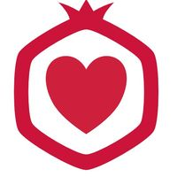
Cooperativa Il Melograno
Cooperativa sociale di Cuneo con laboratori educativi per bambini e ragazzi, a Cuneo e a Mondovì: cucina, fumetto, lavoretti creativi.10 attività in programma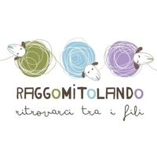
Raggomitolando
Negozio di filati sostenibili e made in Italy in San Salvario, con scuole di ferri e uncinetto per principianti, workshop su progetti e serate di maglia in compagnia.10 attività in programma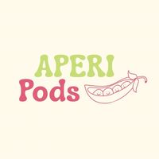
Aperi Pods
Workshop creativi in giro per Torino, spesso con aperitivo o brunch: maglia, ricamo, pittura e altri lavori manuali da fare in compagnia.9 attività in programma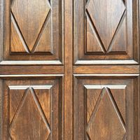
Atelier Crea-Arti
Spazio d’arte a Cuneo, sul Lungo Gesso, con corsi e workshop per ogni età: ceramica, acquerello, arte in inglese, gioielli, ghirlande e lettering.9 attività in programma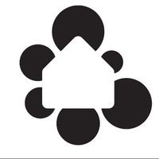
Casa nel Parco
La casa del quartiere di Mirafiori Sud: corsi e laboratori per tutte le età, dalla maglia alla danza, dal coro alla scrittura.9 attività in programma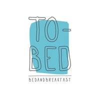
TObed
Bed & breakfast di charme in Via Argonne, a Borgo Po, che ospita workshop e piccoli eventi con artiste e creative diverse: pittura, ricamo, uncinetto e candele.9 attività in programma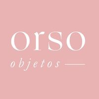
Orso Objetos
Lo studio di Casa Orso, in San Donato, dove si insegnano rammendo visibile, sashiko, tintura naturale e cianotipia, in italiano, inglese e spagnolo.8 attività in programma- upTOyou
Corsi, eventi ed esperienze creative per adulti e bambini: uncinetto, cucito e origami.7 attività in programma 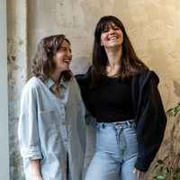
Velvet Truffle Riot
Workshop artistici in italiano e inglese, per tutti i livelli, nello studio di Via Cagliari: calligrafia, stampa, collage, ricamo e serate di studio aperto.7 attività in programma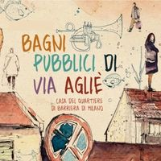
Bagni Pubblici
La Casa del Quartiere di Barriera di Milano in Via Agliè: docce pubbliche, bistrò popolare e tanti corsi e laboratori per il quartiere.6 attività in programma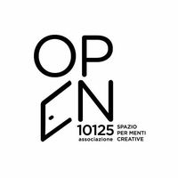
OPEN 10125
Una comunità di fashion designer in Via Principe Tommaso, con corsi di cucito e laboratori di sartoria.6 attività in programma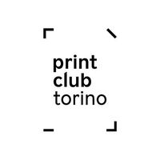
Print Club Torino
Laboratorio di stampa e sperimentazione grafica: serigrafia, risografia, incisione, con workshop e masterclass.6 attività in programma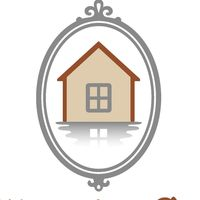
Riflessi di Casa
Negozio di artigianato e oggetti per la casa a Villar Perosa, che è anche uno spazio per workshop creativi: ceramica, macramè, gioielli botanici e ghirlande.6 attività in programma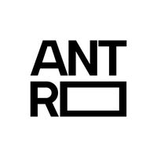
Antro
Uno spazio condiviso con centinaia di eventi gratuiti l’anno per chi ha la tessera, tra cui laboratori di scrittura e collage.5 attività in programma Fablab Torino
Fablab Torino
Laboratorio di fabbricazione digitale con corsi per usare stampa 3D, taglio laser e fresatrice, e laboratori di elettronica per ragazzi.5 attività in programma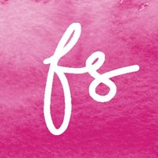
Favole di Seta
La sartoria di Maura Abello, che crea abiti da sposa su misura e insegna cucito: corsi base, workshop su un capo e serate di cucito condiviso.5 attività in programma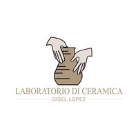
Laboratorio di Ceramica a Manta
Il laboratorio di ceramica di Gisel López a Manta, con lezioni a orari flessibili e workshop con colazione o aperitivo.5 attività in programma- Scialabà
Il laboratorio di Nicoletta Biglia, che crea gioielli e oggetti in ceramica e tiene corsi di modellazione, tornio e decorazione.5 attività in programma 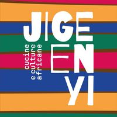
Jigeenyi
Un locale di culture e cucine a Porta Palazzo, in Via Borgo Dora, con laboratori di cucina, ricamo, sartoria e collage.4 attività in programma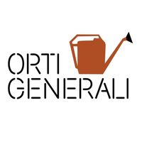
Orti Generali
Orti urbani lungo il Sangone, a Mirafiori: corsi di orto e natura, gite e attività all’aperto per tutte le età.4 attività in programma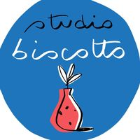
Studio Biscotto
Il laboratorio di ceramiche dipinte a mano di Rebeca e Carolina in Via Monti, con workshop di decorazione.4 attività in programma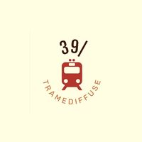
39/ Tramediffuse
Artigiani, letture e workshop nel centro di Pinerolo, in Via Trento.3 attività in programma- Across the Glass
Laboratorio di vetrate artistiche e lampade Tiffany in Corso Regina Margherita, con workshop per imparare la tecnica partendo da zero.3 attività in programma 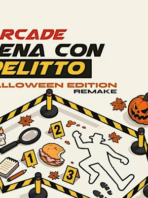
Arcade
Locale di giochi al Lingotto con serate di giochi da tavolo, tornei di Magic e cene con delitto.3 attività in programma- Casa del Quartiere di San Salvario
Uno spazio aperto e multiculturale in Via Morgari, con corsi, laboratori e incontri per il quartiere.3 attività in programma 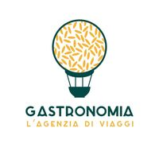
Gastronomia L’Agenzia di Viaggi
Gastronomia a Cit Turin che cucina piatti da tutto il mondo e organizza laboratori, assaggi e aperitivi creativi.3 attività in programma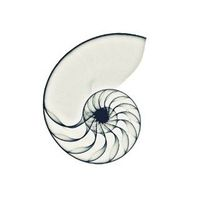
Il Nicchio di via Monti
Uno spazio creativo a Vanchiglia per imparare e sperimentare la ceramica, tra corsi, workshop, mostre ed eventi.3 attività in programma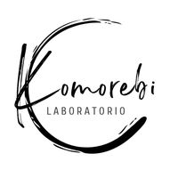
Komorebi Lab
Il laboratorio di Paola Gaja dedicato al kintsugi contemporaneo, la riparazione della ceramica con l’oro, con workshop su prenotazione.3 attività in programma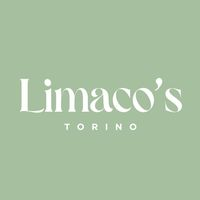
Limaco’s Lab
Torte personalizzate ed esperienze dolci: workshop di decorazione di torte e serate come Cake & Chill.3 attività in programma Magazzini Tessili
Magazzini Tessili
Negozio di tessuti in Via Cervino con laboratori di cucito, tappezzeria e attività per bambini.3 attività in programma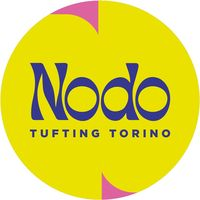
Nodo Tufting Torino
Lo studio di tufting di Giulia Mezzadri in Via Guastalla, dove si crea il proprio tappeto con la pistola da tufting, più serate di macramè e serigrafia.3 attività in programma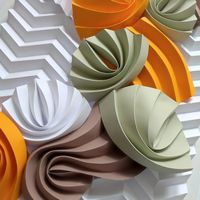
Origami Pop
Le lampade in origami di Margherita Rojas Melo, che insegna a piegare la carta nei suoi workshop.3 attività in programma Patrizia Berto (Startlap)
Patrizia Berto (Startlap)
Workshop di tintura naturale, shibori e stampa botanica.3 attività in programma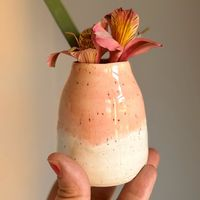
Simona di Terraferma Ceramiche
Ceramista: workshop di modellazione per adulti e bambini da Riflessi di Casa, a Villar Perosa.3 attività in programma 123 Stella
123 Stella
Laboratori creativi per bambini.2 attività in programma Aldo Diazzi
Aldo Diazzi
Fotografo: workshop di ritratto e di street photography a Torino.2 attività in programma Andrea Marzolla (Tilt Music)
Andrea Marzolla (Tilt Music)
2 attività in programma Angelica Nolasco
Angelica Nolasco
Workshop di acquerello e glass painting all’Atelier Crea-Arti di Cuneo.2 attività in programma- ACAquarius Ceramica
Laboratorio di ceramica nel Cortile del Maglio, con corsi di tornio e modellazione a cicli di più incontri.2 attività in programma  Biblioteca 0-18 di Cuneo
Biblioteca 0-18 di Cuneo
La biblioteca per bambini e ragazzi di Cuneo, con letture, giochi e laboratori divisi per età.2 attività in programma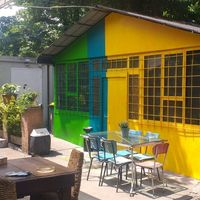
Bocciofila Vanchiglietta
Circolo ARCI tra bocce, cibo e carte, con progetti di autonomia sociale e laboratori ospitati, come quelli di kombucha.2 attività in programma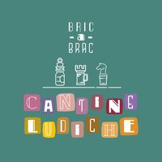
Bric a Brac
Piccolo pub di Peveragno con aperitivi, birra e tanti giochi in scatola, che organizza serate di gioco e laboratori.2 attività in programma Cascina Macondo
Cascina Macondo
Associazione che cura laboratori inclusivi di danzamovimento, scrittura creativa e lettura ad alta voce.2 attività in programma Chantal
Chantal
Artista e insegnante madrelingua inglese: corsi e laboratori d’arte in inglese all’Atelier Crea-Arti di Cuneo.2 attività in programma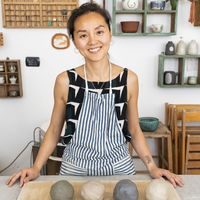
Chu Lab
Il laboratorio di ceramica di Chu in un cortile di Via Vidua, a San Donato: corsi di tornio per tutti i livelli e modellato per bambini.2 attività in programma Diletta
Diletta
Workshop di decorazione della ceramica e di kintsugi da Pottery Lab.2 attività in programma- El Chill Garden
Laboratorio artistico in Via Sant’Anselmo, a San Salvario, con workshop di pittura e terrarium.2 attività in programma  Folkestra & Folkoro
Folkestra & Folkoro
Orchestra e coro di musica folk, aperti a chi suona e canta.2 attività in programma Galleria Tempio della Luce
Galleria Tempio della Luce
Galleria d’arte a Nichelino con laboratori di pittura, acquerello, mandala, fiber art e arteterapia.2 attività in programma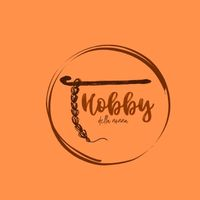
Hobby della Nonna
Enza insegna uncinetto negli Apericrochet della Gastronomia L’Agenzia di Viaggi.2 attività in programma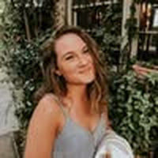
jstofphotography
Workshop di stampa su stoffa e di cianotipia con le piante.2 attività in programma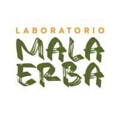
Laboratorio MalaErba
Laboratorio creativo e teatro di Anomalia Teatro in Via Verrès, con corsi teatrali e spettacoli.2 attività in programma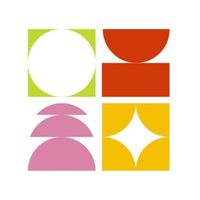
Masala Studio
Corsi di cucina vegetale e mindfulness in Via Ormea.2 attività in programma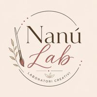
Nanù Lab Kids
I laboratori creativi di Naomi Re a Pinerolo: niente esperienza richiesta e materiali sempre inclusi.2 attività in programma- Noau Officina Culturale
Associazione culturale di Cuneo che cura letture e laboratori per bambini.2 attività in programma - OCOfficine Creative Torino
Associazione al Cecchi Point con corsi di serigrafia e cianotipia e laboratorio aperto il giovedì.2 attività in programma 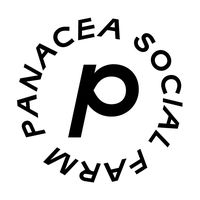
Panacea Social Farm
Cooperativa sociale e panificio a pasta madre premiato dal Gambero Rosso, con corsi pratici di panificazione.2 attività in programma- Pangramma
Studio di design che organizza anche laboratori per bambini.2 attività in programma  Parco del Monviso
Parco del Monviso
Il parco naturale del Monviso, con gite in bici e uscite fotografiche.2 attività in programma Proyecto Gricel
Proyecto Gricel
Scuola di tango con lezioni, milonghe e seminari.2 attività in programma Ruthvi Deev
Ruthvi Deev
Corsi e stage di danza indiana, dal Bollywood al Garba.2 attività in programma Sara Venturino
Sara Venturino
Laboratori di disegno, china e acquerello.2 attività in programma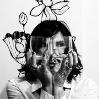
Si Performance Artistiche
Simonetta Molinaro, stilista e pittrice: aperi-workshop di pittura acrilica e di pittura su tessuto.2 attività in programma- Un filo di Giustina
Corsi di uncinetto per imparare da zero.2 attività in programma  Winelivery Bar & Enoteca
Winelivery Bar & Enoteca
Enoteca in centro con degustazioni di vini e vermouth.2 attività in programma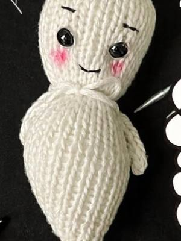
Wool Crossing
Il negozio di filati di Federica Giudice in Via Boccaccio: corsi di maglia, KAL, Knit Night e serate al cinema con i ferri.2 attività in programma- WorkshopFotografici.eu
Workshop di fotografia all’aperto, dal ritratto alla street photography.2 attività in programma 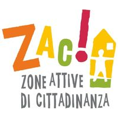
ZAC!
Il centro culturale della stazione di Ivrea: musica dal vivo, mercatini, cibo e laboratori aperti alla città.2 attività in programma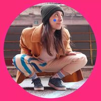
Albergo di Virtù Sartoria
Abiti e accessori cuciti e dipinti a mano in uno studio di San Salvario.1 attività in programma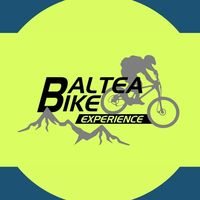
Baltea Bike Experience
Tour in bici di gruppo con un accompagnatore cicloturistico, nel Canavese e dintorni.1 attività in programma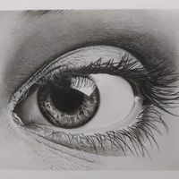
Barbara Sirtoli
Ritrattista, illustratrice e insegnante di disegno: corsi settimanali di disegno, pittura, china e pastello in diverse sedi di Torino e, a mesi alterni, workshop di due ore con i pastelli secchi. Il profilo @workshop.arte.torino è quello dei suoi workshop.1 attività in programma Barburin
Barburin
Cacce al tesoro e giochi in giro per il centro di Torino, anche per famiglie.1 attività in programma BlaBla Photowalk Events
BlaBla Photowalk Events
Passeggiate fotografiche di gruppo per le vie di Torino.1 attività in programma- BCBook Club 2.0
Un book club di Torino con un libro al mese, da discutere online o dal vivo nelle librerie amiche, e dirette Instagram su editoria e libri.1 attività in programma  Cafè Neruda
Cafè Neruda
Locale in Borgo Vittoria con lezioni e serate di tango.1 attività in programma Casa del Quartiere Barrito
Casa del Quartiere Barrito
La casa del quartiere di Nizza Millefonti, con laboratori del sabato per bambini e famiglie.1 attività in programma Casa Martini
Casa Martini
La casa del Martini a Pessione, con esperienze di mixology per preparare cocktail.1 attività in programma Cascina Falchera
Cascina Falchera
Cascina didattica alla Falchera, con laboratori in natura per bambini e famiglie.1 attività in programma- CRCascina Roccafranca
La casa del quartiere di Mirafiori Nord, con tanti corsi durante l’anno.1 attività in programma  Club di Disegno
Club di Disegno
Serate di disegno in compagnia, tra drink e temi diversi.1 attività in programma- Cubo Teatro
Compagnia di teatro contemporaneo multidisciplinare, con corsi e laboratori teatrali.1 attività in programma 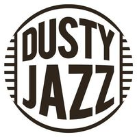
Dusty Jazz
Corsi ed eventi di Lindy Hop, jazz roots e blues a Torino, con lo Swing Train Festival.1 attività in programma- Emporium APS
Associazione che organizza il San Salvario Emporium e altri mercati ed eventi culturali, con workshop.1 attività in programma  Fortango
Fortango
Workshop e serate di tango al Fortino.1 attività in programma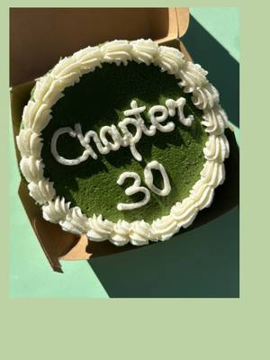
Giuppi Pasticceria
La pasticceria artigianale di Giulia Orecchia: torte su ordinazione e workshop di decorazione, come le bento cake.1 attività in programma Hiking Taste Tour
Hiking Taste Tour
Trekking guidati nelle Langhe, tra vigne e paesaggi.1 attività in programma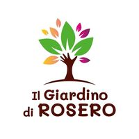
Il Giardino di Rosero
Azienda agricola a Pino Torinese con fiori, animali e stagioni vere: tulipani, ciliegie, zucche ed esperienze in natura per tutti.1 attività in programma Il Villaggio della Zucca
Il Villaggio della Zucca
Campo di zucche a Favria, con attività per famiglie.1 attività in programma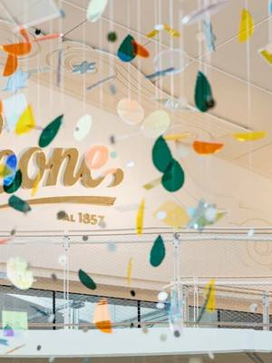
Leone 1857
La storica fabbrica di pastiglie e cioccolato di Collegno, con visite e laboratori.1 attività in programma Leumann Hub
Leumann Hub
Spazio culturale nel villaggio Leumann di Grugliasco, con laboratori per bambini.1 attività in programma Like This Agency
Like This Agency
Settimane di ballo latino sulla neve, a Bardonecchia.1 attività in programma L’Autin
L’Autin
Cantina in val Pellice con visite e degustazioni di vino, anche in miniera.1 attività in programma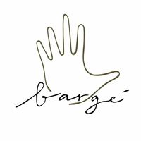
Manibargè
Gioielli minimal e colorati fatti a mano da Virginia, con workshop per creare i propri.1 attività in programma Marta
Marta
1 attività in programma Merceria Taglia e Cuci
Merceria Taglia e Cuci
Merceria di Savigliano con incontri di maglia e colazione.1 attività in programma- Minime Differenze
Cacce al tesoro e giochi per adulti in città.1 attività in programma  Mulino Sambuy OdV
Mulino Sambuy OdV
Associazione del mulino di San Mauro Torinese, con passeggiate in collina.1 attività in programma Museo del Risparmio e MUSLI
Museo del Risparmio e MUSLI
Il Museo del Risparmio, con laboratori per famiglie insieme al MUSLI.1 attività in programma Museo Della Casa
Museo Della Casa
Galleria e museo a Mondovì, in Via Beccaria: mostre e un corso di pittura a olio per adulti.1 attività in programma MUSLI, Fondazione Tancredi di Barolo
MUSLI, Fondazione Tancredi di Barolo
Il museo della scuola e del libro per l’infanzia a Palazzo Barolo, con laboratori di calligrafia, libri pop-up e attività per famiglie.1 attività in programma- Nikin House
Sala feste e spazio eventi a Borgaro Torinese, con laboratori creativi per bambini e serate di pittura e arteterapia per adulti.1 attività in programma - Nodo Concept Space
Concept space di artisti e artigiani, con laboratori e workshop.1 attività in programma  Novel Academy
Novel Academy
Scuola di disegno e pittura con corsi durante l’anno.1 attività in programma- Officina Sashiko di Studio Indaco
Lo spazio di Studio Indaco a Settimo Torinese, con workshop di sashiko e ricamo giapponese.1 attività in programma  Open Art House
Open Art House
Spazio d’arte a Ivrea con laboratori di fotografia e intreccio.1 attività in programma- Ouimiel Studio
Lo studio di ceramica di Isabella Simiele in Via Porta Palatina, con workshop di modellazione.1 attività in programma - Pintology
Serate fuori dal comune nei locali di Torino, tra quiz, giochi e attività per menti curiose.1 attività in programma - Più SpazioQuattro
La Casa del Quartiere di San Donato, con corsi e laboratori per il quartiere.1 attività in programma - PSProgetto SLIP
Scuola di circo e discipline aeree in Barriera di Milano.1 attività in programma - Psicolab
Tre psicologhe che propongono laboratori esperienziali con tecniche artistiche, per raccontarsi e incontrare gli altri.1 attività in programma - QB Creazioni
Laboratorio di ceramica moderna in Piazza Fontanesi, a Vanchiglietta, con corsi e workshop per adulti e bambini.1 attività in programma  Quadratino
Quadratino
Concept store indipendente con due negozi, a Vanchiglia e in Via XX Settembre: oggetti ironici, idee regalo, design e vintage, e ogni tanto qualche serata speciale.1 attività in programma- Ristoro
Il bar nel cortile del Cecchi Point, che ospita anche serate e laboratori.1 attività in programma - Rita Capparelli
Organizza Pilates a Palazzo: lezioni di pilates e colazione in palazzi storici di Torino, ogni volta in un posto diverso.1 attività in programma - Sassi
Abiti e accessori sartoriali ispirati al mondo botanico, con lezioni di modellazione e cucito.1 attività in programma  Simona Evoli
Simona Evoli
Workshop di danza orientale e folklore egiziano.1 attività in programma Slow Town Blues
Slow Town Blues
Workshop e serate di blues dance.1 attività in programma Soffio nel Vento
Soffio nel Vento
Laboratorio artigiano e negozio a Moncalieri: candele profumate, bomboniere e regali personalizzati, con qualche workshop.1 attività in programma- Solea Collection
Negozio di borse, abiti e gioielli in Via Des Ambrois, che ospita workshop.1 attività in programma  Somewhere Tours
Somewhere Tours
Esperienze ed escursioni a Torino, come le uscite in canoa sul Po.1 attività in programma Spazio MoMag (Fondazione Montessori Italia)
Spazio MoMag (Fondazione Montessori Italia)
Lo spazio della Fondazione Montessori in Borgo Dora, con attività per bambini nella natura.1 attività in programma- STSPLIT Teatro
Scuola di teatro con corsi di recitazione, musical e canto.1 attività in programma  Studio 17
Studio 17
Studio in centro con laboratori di collage.1 attività in programma- SSStudio21 Street Dance School
Scuola di street dance al Lingotto.1 attività in programma  Surf In Town Community
Surf In Town Community
Lezioni di surfskate al Parco Dora.1 attività in programma Tenuta Carpe Diem
Tenuta Carpe Diem
Tenuta immersa nel verde a San Mauro di Boves, che ospita colazioni e aperitivi creativi.1 attività in programma Tono
Tono
Listening bar e birrificio in Via Catania con impianto Hi-Fi, che ospita anche mattinate di pilates con colazione.1 attività in programma Turismo in Langa
Turismo in Langa
Trekking ed escursioni guidate nelle Langhe.1 attività in programma Urban Desires 2026
Urban Desires 2026
Rassegna sulla città con giochi e attività partecipative.1 attività in programma- Veronica Carvelli (Spazio Nikeore)
Pittrice: live painting agli eventi, ritratti, murales e workshop di pittura creativa.1 attività in programma  Vitadasingle.net
Vitadasingle.net
1 attività in programma Vivere d’Arte
Vivere d’Arte
Scuola di musica e canto in San Salvario, con seminari.1 attività in programma- Eataly Torino Lingotto
La scuola di cucina di Eataly al Lingotto: cooking class, corsi di pasta e pasticceria, degustazioni di vino, birra e olio, e lezioni per bambini e famiglie.65 attività in programma  STUDIOFOOD33
STUDIOFOOD33
Uno studio di cucina in Via dei Mille dove si cucina insieme ai cuochi: cooking class serali a tema, dal sushi alla pasta fresca, anche per feste e gruppi.26 attività in programma- RTReboot Teatro
Scuola di improvvisazione, recitazione e stand up comedy a Torino e Cuneo, con corsi annuali e workshop con ospiti.12 attività in programma - Slow Food
L’associazione del cibo buono, pulito e giusto, che cura alcune lezioni di cucina da Eataly.8 attività in programma  Stefano Buse
Stefano Buse
Chef: cooking class da StudioFood33.4 attività in programma Tabete Market
Tabete Market
Market di prodotti giapponesi che cura cooking class e laboratori di cucina giapponese.3 attività in programma- Caterina Mosca
Lezioni di cucina vegetale da Eataly.2 attività in programma - Chiara Lazzarin
Lezioni di cucina da Eataly, dai regali da mangiare ai gyoza.2 attività in programma  Patrik Lisa
Patrik Lisa
Chef: cooking class da StudioFood33.2 attività in programma- Cesarine
Lezioni di cucina a casa di cuoche e cuochi locali, per imparare la pasta fatta in casa.1 attività in programma  Choco-Story Torino
Choco-Story Torino
Il museo del cioccolato in San Salvario, con laboratori per preparare il cioccolato.1 attività in programma Chocolate7
Chocolate7
Cioccolateria in centro con degustazioni guidate di cioccolato.1 attività in programma Club Joy
Club Joy
1 attività in programma- Cook & Walk
Lezioni di cucina con uno chef per imparare pasta fresca e dolci italiani.1 attività in programma  Eccetera
Eccetera
Locale a Pozzo Strada con serate per preparare i propri cocktail.1 attività in programma- Forchette a sinistra
Lezioni di cucina italiana: pasta, pizza e tiramisù.1 attività in programma  Luzzi B
Luzzi B
Serate di pittura acrilica con drink, in un atelier con serra.1 attività in programma L’Olio di Eva
L’Olio di Eva
Bottega in centro con degustazioni di olio, vino e formaggi.1 attività in programma- Mosca Bianca di Gaia Sandrelli
Laboratorio di stampa in San Salvario, con workshop di incisione su linoleum.1 attività in programma  Santaromero Coffee
Santaromero Coffee
Torrefazione di caffè specialty con degustazioni guidate.1 attività in programma Spazio Incompleto Gioielli
Spazio Incompleto Gioielli
Laboratorio orafo con corsi per creare gioielli in argento.1 attività in programma- Vignaiole Prever
Cantina a Villarbasse con lezioni di pasta fresca abbinate ai vini.1 attività in programma